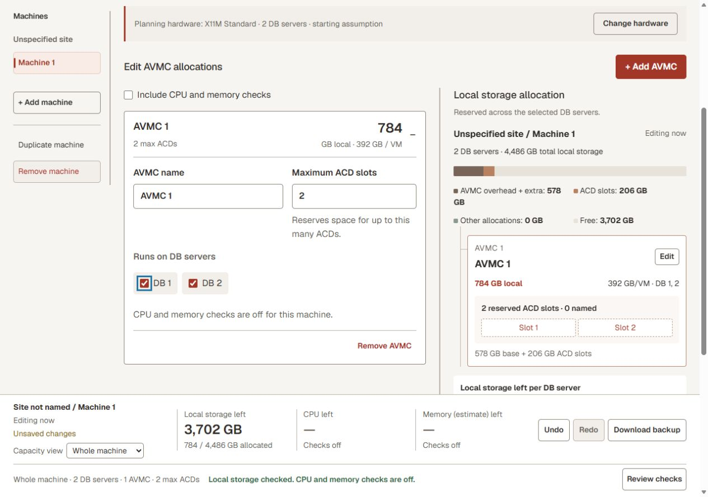
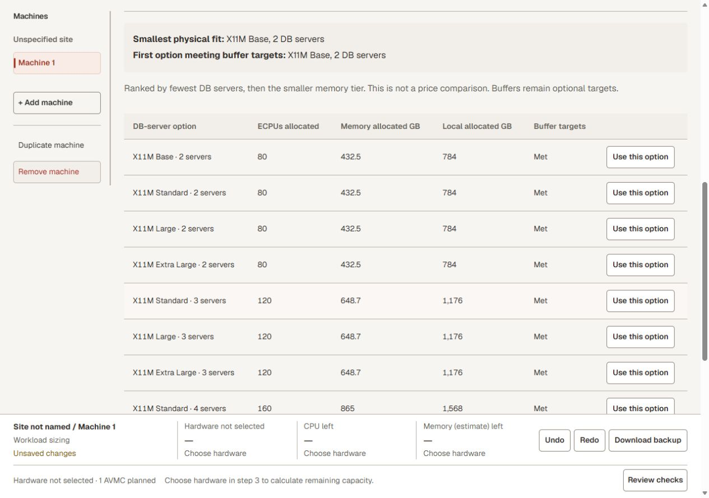
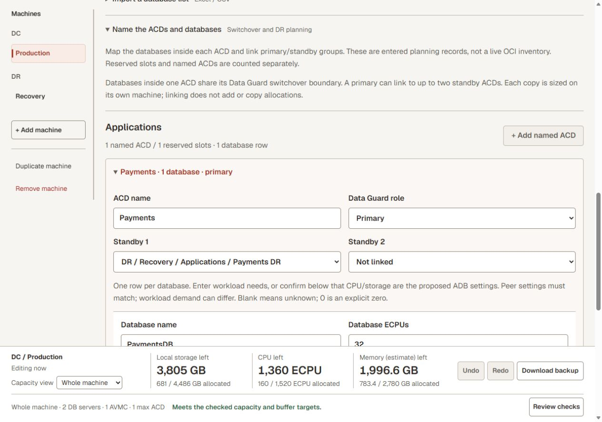
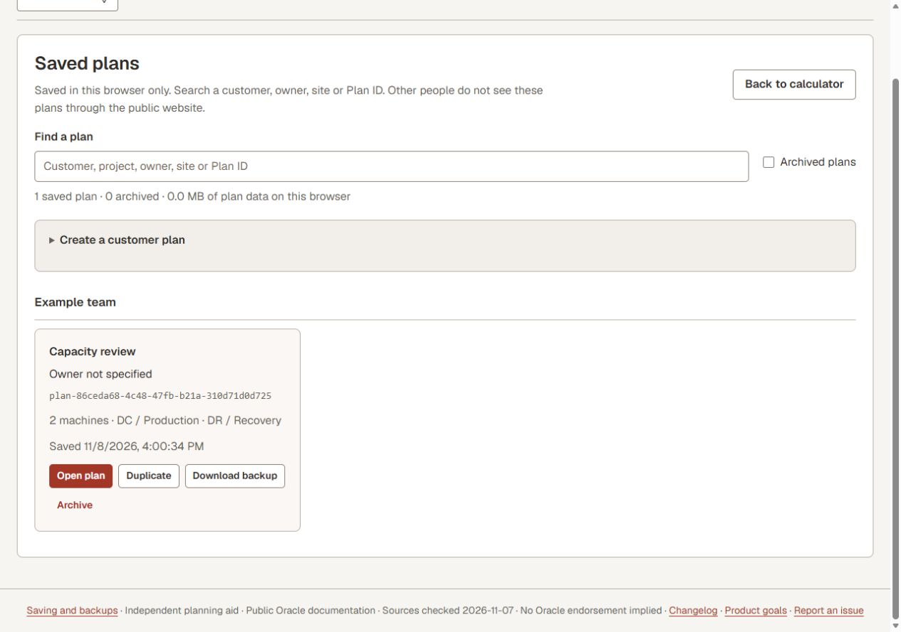

Guide & FAQ
Build a plan you can explain.
Start with one machine. Add detail only when you need it. The walkthroughs use generic examples; they do not connect to OCI or change a deployment.
A walkthrough inside the planner
The guided example highlights real controls: confirm hardware, add an AVMC, reserve two ACD slots, inspect the live balance and save the practice plan. It opens a separate tab so your current working plan stays in place.
Use Back, Skip step or Exit at any time. Skipped steps are not recorded as completed. A successful device save and all required steps are needed to record completion. If browser storage is unavailable, you can still explore the example, but saving and remembering completion may not work.
Restart here or choose Plans & files → Guided example. The first-visit invitation remembers Not now or completion in this browser only. It does not create an account or track you across devices.
Walkthrough 1
Check local capacity on known hardware
Use this when you know the machine shape and want to see how many AVMCs and ACD slots fit.
- Open a blank capacity check. The starting hardware is an assumption, not a detected machine.
- Select Change hardware. Choose the shape and DB-server count, and enter other allocations already using those servers. Preset capacities stay locked.
- Open Allocations, select Add AVMC, then set its maximum ACD slots and DB-server placement.
- Watch the live balance and allocation diagram. Check each DB server as well as the whole-machine total.
- Enable CPU and memory checks only when those allocations are known. Use Review for remaining issues.

Walkthrough 2
Find hardware from workload needs
Use this when the target machine is not selected yet.
- Start workload sizing. Name the site and machine.
- In Allocations, add an AVMC and its planned ACD slots. Enter total workload ECPUs and RAM. For a practice case, reserve two ACD slots and enter 40 ECPUs and 160 GB RAM.
- Keep missing values marked as missing. If using named databases, review and apply Use database totals for sizing before comparing.
- In Compare, review the extra ECPU allowance and DB-server search range, then compare options.
- Inspect the physical fit and buffer targets separately. Select a proposal only after reviewing its assumptions; repeat for each machine.
The CPU/RAM values here describe workload needs. Known-hardware mode edits AVMC allocations instead. Applying inventory totals does not automatically resize an existing AVMC.

Walkthrough 3
Map database groups, sites and DR
Machine → AVMC → ACD → ADB. The AVMC is the VM cluster; an ACD groups databases; each ADB is an individual database.
- Open the production/DR example, or add a machine for each infrastructure you are planning.
- Under Allocations → Name the ACDs and databases, name each group and add database rows. Reserved slots and named groups are different: an empty reserved slot still counts toward the local estimate.
- Mark databases that need their own switchover group. Separate their ACDs when that is the intended boundary.
- For DR, link the intended primary and standby groups and review each machine independently. Entered links do not copy CPU, memory or storage allocation.
Oracle documents switchover at the primary/standby ACD level. Separate ACDs can provide separate database groups for that operation, subject to supported configurations. The planner checks the entered grouping; it does not validate the complete DR design. Oracle: manage Autonomous Data Guard.

Walkthrough 4
Import a database list
Supported inputs are standard unencrypted XLSX and UTF-8 CSV. One row should describe one database and its parent site, machine, AVMC and ACD.
- Open Allocations → Import a database list. Select the file, worksheet and header row, or paste CSV.
- Map the columns and check the preview. Confirm ECPU units; the importer does not guess an OCPU conversion.
- Choose whether to add inventory or replace the active machine's named inventory. Review any slot increases before applying.
- If the inventory should drive sizing, separately review and apply its CPU/RAM totals. Then rerun the hardware comparison.
Download a small generic CSV example. Rename its site/machine values to match your plan when using replacement mode. DR links are not inferred from row names; link the intended groups after import.
Blank cells remain unknown. Spreadsheet formulas are not recalculated; cached results can be stale. Imported rows do not prove the target hardware has enough capacity.
Walkthrough 5
Compare a change, growth or migration
- Before and after: record Before values under Allocations, then edit the working design. This stores comparison totals and does not read OCI.
- Fewer AVMCs, more ACDs: use Compare to inspect layout alternatives. Preview shows the proposed result; Use this layout applies it; Cancel keeps the original.
- Growth: under Compare saved plans, growth and migration, save an option or create a growth option using your entered CPU/RAM percentages. Review changed inventory totals and compare hardware again.
- Migration overlap: model old and new allocations coexisting. Both consume capacity; copied groups have no DR links until you define them.
Consolidation changes operational isolation as well as capacity. Validate maintenance, placement, availability and application requirements separately before adopting a layout.
Walkthrough 6
Save, resume and share
- Open Plan details to name the customer/project and optionally add an owner label.
- Select Save on this device. This keeps a browser-local copy and enables automatic updates for that plan. Check the save status after editing.
- Use Plans & files → Download JSON backup for a portable copy. Check that the download completed.
- On another browser or device, use Import a JSON file. A Plan ID alone cannot retrieve the plan.
- Use Review or Print/PDF for discussion output. A report does not replace the editable JSON backup.

The website is public; your saved plans are not a shared online library. Browser profiles on the same device may have different storage. Clearing browser data can remove plans. Download JSON before changing browsers, clearing data or moving devices.
Understand the result before sharing it
| What you see | What it means | What to do |
|---|---|---|
| Within checked capacity | The entered allocations fit the resources checked by the tool. | Review missing inputs and unassessed areas too. |
| Below a buffer target | Physical capacity may fit, but less spare capacity remains than you requested. | Review growth needs; a buffer is an optional planning target. |
| Shortfall / over capacity | At least one checked resource or DB server is exceeded. | Reduce allocations, change placement or compare larger hardware. |
| Not checked / checks off | That resource has not been assessed from the current inputs. | Enter the necessary data if it matters to the decision. |
| Inventory sizing needs review | The database inputs and last applied sizing snapshot no longer agree. | Review/apply database totals and compare again. |
| Preview | You are viewing an option that is not yet part of the plan. | Apply it or Cancel before saving the intended result. |
Common questions
Is this an official Oracle tool?
No. It is an independent planning aid based on public Oracle documentation. Confirm the proposed configuration in OCI and with the appropriate Oracle team.
Does the planner connect to OCI or change a machine?
No. It calculates from the values you enter. Labels, comparison snapshots and preview/apply actions affect the browser plan only.
Why does adding an empty ACD slot use local storage?
The configured maximum ACD count is part of the AVMC local reservation estimate. Named databases and actual used database data are separate inputs. Oracle sizing formula.
Is 16 ACDs the limit for the whole machine?
Oracle documents a maximum of 16 ACDs per AVMC. Infrastructure capacity and provisioning conditions can impose further constraints; multiplying 16 by the number of AVMCs does not prove the layout fits. Oracle capacity limits.
What is the difference between local storage and Exadata storage?
This tool's local-storage estimate covers DB-server space reserved for the AVMC/ACD layout. Shared database storage on Exadata storage servers is a different resource. A local fit does not establish shared-storage or backup capacity.
Why is a hardware capacity field locked?
It comes from the selected preset. To model a different verified configuration, select Custom and enter its console capacity. Do not increase a preset's capacity just to make a plan fit.
Why does one server fail when the total looks sufficient?
Every selected DB server must fit its own allocations. Spare local storage on another server does not offset a shortage on the affected server.
Why are memory estimates different for older AVMCs?
The app offers current, confirmed legacy and unknown-history treatment. Use the legacy setting only when its checklist matches the actual AVMC. Creation date and memory-ratio changes matter; use the console to confirm applicability. Oracle AVMC memory sizing.
Does a buffer reserve or consume physical capacity?
No. It is the spare capacity you prefer to keep. The app reports a warning when the design falls below that target, separately from a physical shortfall.
Can I size conventional VM clusters here?
You can record their known footprints as other allocations. The tool does not automatically calculate the full conventional VMC filesystem, backup or storage model.
Does a successful comparison guarantee provisioning or performance?
No. Console eligibility, CPU reservations/reclaimable pools, service limits and operational conditions still apply. A capacity estimate is not a performance test or deployment approval.
Can someone else find my plan by its ID?
No. The ID helps identify a plan already saved or imported in that browser. It is neither a login nor an online sharing link.
What if another tab changed my saved plan?
The planner pauses automatic saving and keeps the working version for review. Use the conflict options to open the saved version, save a new copy or deliberately replace it. Keep a JSON backup before discarding work.
Why is the page light even when my device uses dark mode?
First visits default to Light. The sun/moon button changes it. Plans & files → Use device appearance restores OS-following mode; explicit choices are remembered in the browser.
Scope and limits
The planner covers AVMC local reservations, optional CPU/memory allocation checks, workload-based hardware comparisons, named database grouping, per-machine placement and saved design options. Presets focus on supported X11M ExaC@C Autonomous configurations; other verified capacities use Custom.
It does not establish storage-cell or backup sizing, network readiness, pricing, licensing, application performance, N-1/site-failure capacity, DR readiness, or whether a resize is operationally allowed. Session planning rates are editable assumptions and require separate confirmation. Review the app's coverage table before sharing a result.
These walkthroughs are checked in browser viewports. Physical-device keyboard behavior and print pagination are not certified.
Sources and version
Guide checked 8 November 2026 for version 3.3.0. Numerical rules retain their separate source-check date, shown in the planner. When Oracle pages disagree, the app records the discrepancy rather than treating every estimate as a provisioning guarantee.
- Oracle: create and size an AVMC
- Oracle: capacity terms and limits
- Oracle: Autonomous Data Guard operations
- Detailed feature coverage · Changelog · Test catalogue